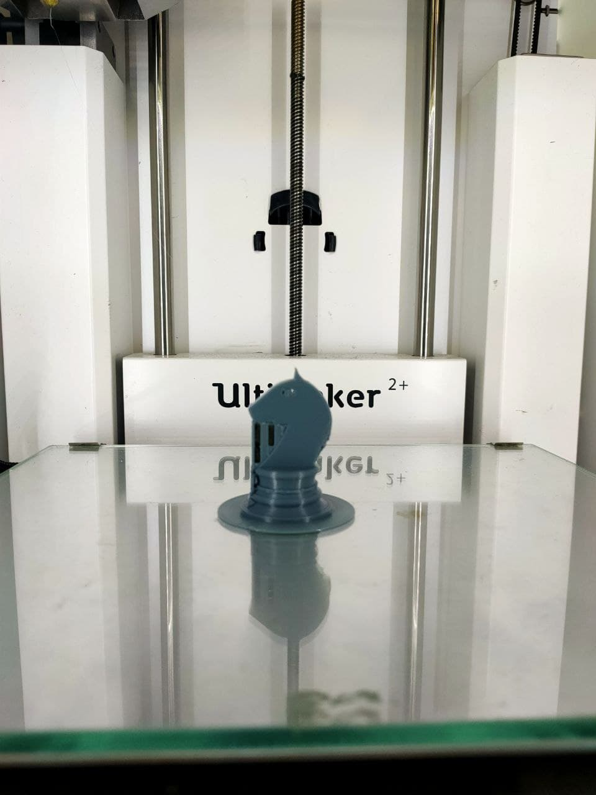
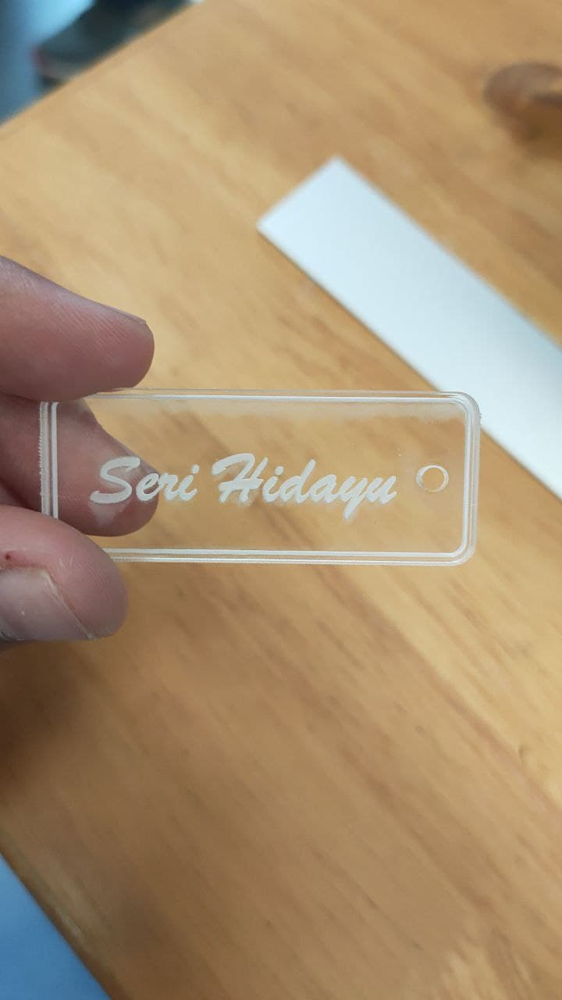

|  | An image of the 3D knight chess piece. We must set the CURA settings & the time & amount of materials used.& It takes less than hour to finalise the product into 3d printing Once done, need to wait for the temperature to cool down as it is still hot and tadaaaa.. end results It was challenging to design the knight chess piece |
|  | Laser cutting a name tag by using Computer controller cutting. CAD provides necessary data from design files which controls the cutting and marking of the material. & The software that I used for laser cutting is CorelDraw. It is already installed in the computer. The name tag was designed in fusion 360, then must be save into a single DXF file to save time on the laser cutter piece. Adjustments to be made at Coreldraw such as the cut lines & change the width to hairline. Followed by adding raster graphics for engraving such as the text. |